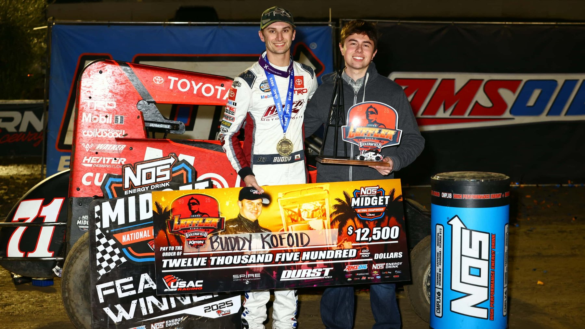

Buddy Kofoid Returns as Defending Champion for $12,500-to-Win Jason Leffler Memorial at Bakersfield
The 12th Jason Leffler Memorial is Tuesday, Nov. 24, at Bakersfield Speedway at Kevin Harvick’s Kern Raceway. The 30-lap USAC National Midget feature pays $12,500 to win.

Buddy Kofoid will return as the defending champion when the USAC NOS Energy Drink Midget National Championship races the 12th Jason Leffler Memorial on Tuesday, Nov. 24, at Bakersfield Speedway at Kevin Harvick’s Kern Raceway, according to a USAC preview by Steven Blakesley. The 30-lap feature on the 1/3-mile dirt oval will pay $12,500 to win, USAC said. Kofoid, of Penngrove, California, won last year’s race at Bakersfield, the first time the memorial was held in California, and also won USAC’s most recent National Midget feature on Saturday at Merced Speedway.
The event honors Jason Leffler of Long Beach, California, a three-time USAC National Midget champion in 1997, 1998 and 1999 and the 1998 USAC Silver Crown champion, USAC said. Among Leffler’s 19 career USAC National Midget feature wins are the 1997 Belleville Nationals, the 1997 Hut 100, the 1999 Copper World Classic, the 2002 Night Before the 500, and the 1999 and 2005 Turkey Night Grand Prix. He is an inductee of the National Midget Auto Racing Hall of Fame and the USAC Hall of Fame.
USAC said the 2026 entry list includes Kyle Larson, whom the preview identified as a newly crowned three-time NASCAR Cup Series champion, and Corey Day of Clovis, California. Jade Avedisian, also of Clovis, will compete after returning to midget racing for the Golden State Invasion, according to USAC. Zach Daum, the 2013 winner, and Kofoid are the two past Jason Leffler Memorial champions listed on the preview. Other drivers named by USAC include series point leader Jacob Denney; national champions Justin Grant, Cannon McIntosh and Daison Pursley; National Midget winners Kale Drake, Kevin Thomas Jr., Hayden Reinbold, Jakeb Boxell and Gavin Miller; five-time 2026 USAC Western States Midget feature winner Jett Yantis; and 2026 USAC Western States Midget champion Broedy Graham.
USAC event information lists pits opening at 2 p.m. Pacific, front gates at 4 p.m., a drivers meeting at 4:30 p.m. and cars on track at 5 p.m. IMCA SportMods are also on the card. The official purse pays $3,500 for second and $1,500 for third.